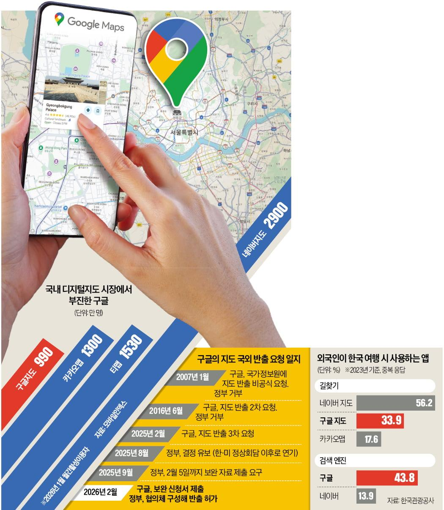

2026.06.15
Always Listening, Outsourcing Memory항상 듣고 있습니다, 기억의 외주화
AI pendants promise to hear and remember everything around you. Why most of them flopped, and what Meta's bet is really after.내 주변 소리를 다 듣고 기억해 준다는 AI 팬던트. 왜 대부분 실패했고, 메타의 베팅은 무엇을 노리나.

2026.05.31
Wearables Finally Become Real Fashion웨어러블, 드디어 진짜 패션이 되다
Ray-Ban Meta lands in Korea. Tech is starting to buy fashion houses, and there's a real gap between convenience and the fear of being filmed.레이밴 메타가 한국에 출시됐다. 테크가 패션을 사들이는 시대, 그리고 편리함과 도촬 공포 사이.

2026.04.17
The Black Box on Your Wrist손목 위의 블랙박스
From McIlroy's green band to buying a Fitbit. How wearable data quietly changed the way I see my everyday.맥길로이의 초록 밴드에서 핏빗을 사기까지. 웨어러블 데이터가 일상을 다시 보게 만든 이야기.

2026.03.12
Welcome, First Time in Korea?어서와, 한국은 처음이지?
Why Google Maps works only halfway in Korea. Security, data sovereignty, and a standoff that lasted 19 years before it finally cracked open.구글 지도가 한국에서만 반쪽인 이유. 안보와 데이터 주권, 그리고 19년 만에 열린 빗장.
2026.01.15
A Place That Sells Attention, Not Products물건이 아니라 '시선'을 파는 곳
The offline store is quietly becoming a giant data collector. It reads your gaze at the shelf and sells that insight back to brands.오프라인 매장이 거대한 데이터 수집기로 변해간다. 매대 위 시선을 읽어, 그 인사이트를 브랜드에 되판다.